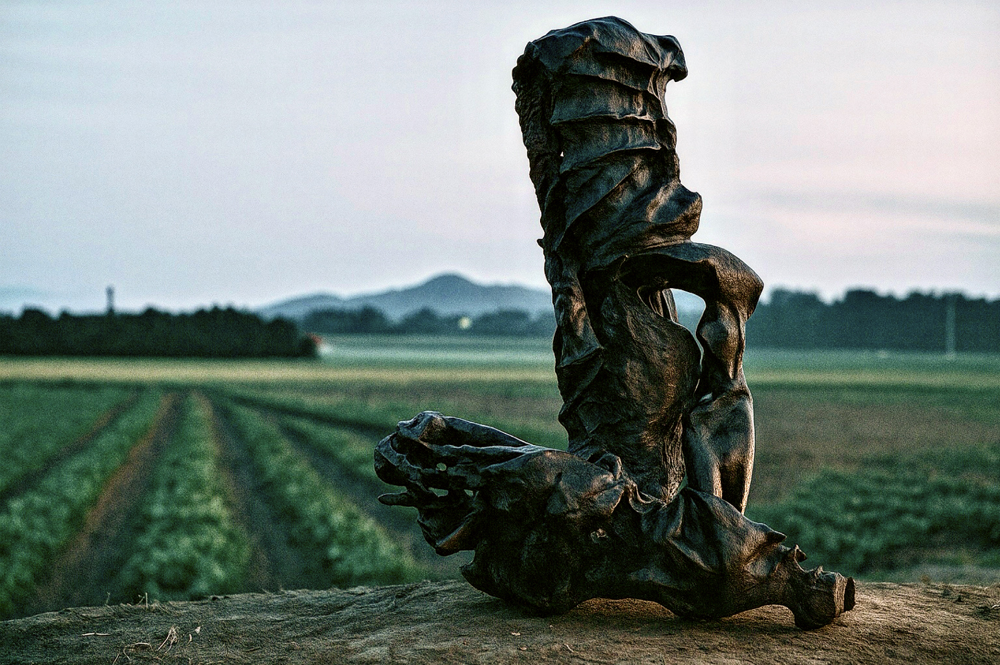
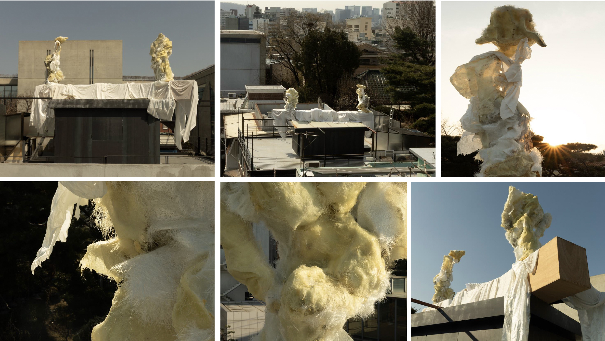
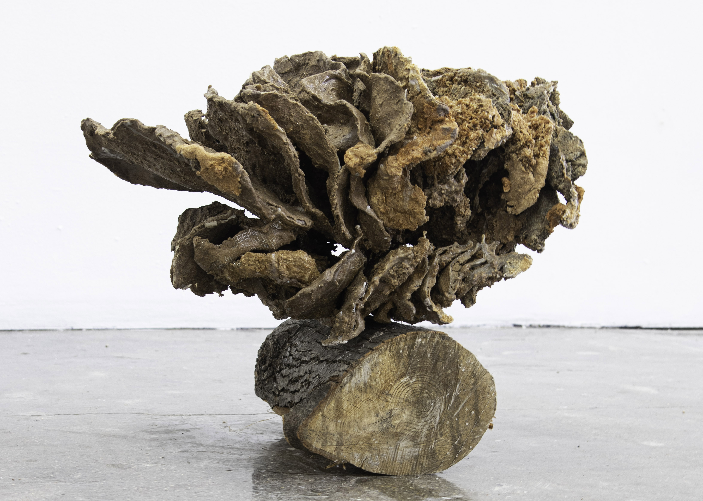
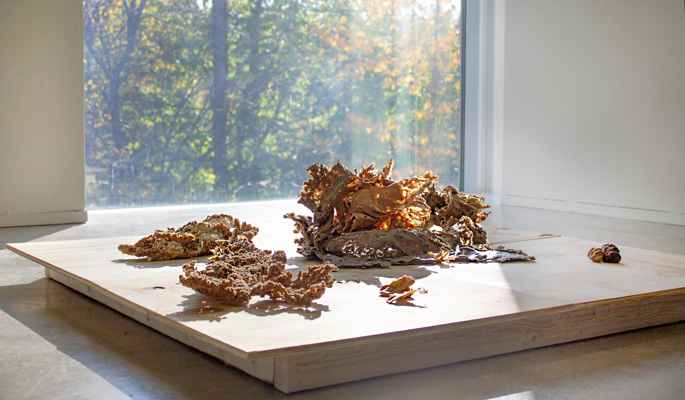
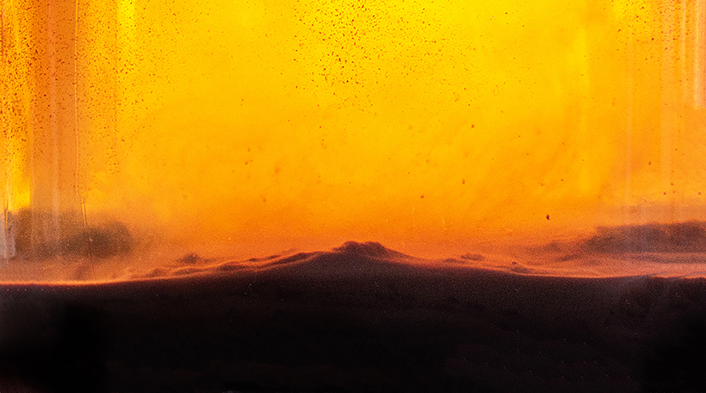

17.
The Ripe (2025)
Ceramic and Lacquer
15.75 x 17.72 x 25.6 inches
The Ripe (2025)
Ceramic and Lacquer
15.75 x 17.72 x 25.6 inches



14-16.
At the edge of the roof, where the sky leans in,
the figures continue to wait—for wind, for presence, for gaze.
At the edge of the roof, where the sky leans in,
the figures continue to wait—for wind, for presence, for gaze.


12-13.
Open Parts (뼈덩어리) (2024)
Unfired Red Clay
Dimension Variable
Open Parts (뼈덩어리) (2024)
Unfired Red Clay
Dimension Variable


Day Dreamer Series
8-11.
Pointe d'Saint Florian (2024)
Plaster, Oak and Douglas Fir, Wire, and Polyurethan
Dimension Variable
meta-dramaturg: Michael Lim(임근준)
8-11.
Pointe d'Saint Florian (2024)
Plaster, Oak and Douglas Fir, Wire, and Polyurethan
Dimension Variable
meta-dramaturg: Michael Lim(임근준)

6. Donna's Head (2024)
Plaster, Oak and Douglas Fir, and Wire
Dimension Variable
Plaster, Oak and Douglas Fir, and Wire
Dimension Variable

5. Shelved Bouquet (2023), Douglas Fir, Oak, Plywood, Glue, and Pigments, 56"x 43"x 51"

4. Low Steady Bloom (2023), Douglas Fir, Plywood, Oak, Mesh Wire, and Glue, 15"x 16"x 22"

3. Flat Footed (2022), Douglas Fir, Plywood, Clay, Mesh Wire and Gap Filler, 20"x 30"x 44"

2. Things Will Turn Around (2022), Installation Iteration, Dimension Variable

1. Folding Lungs (2022), Douglas Fir, Plywood, and Glue, 48"x 48"x 9"

0. Flora(Proxy) (2020), Documentation of Flora's inner landscape captured in a glass jar